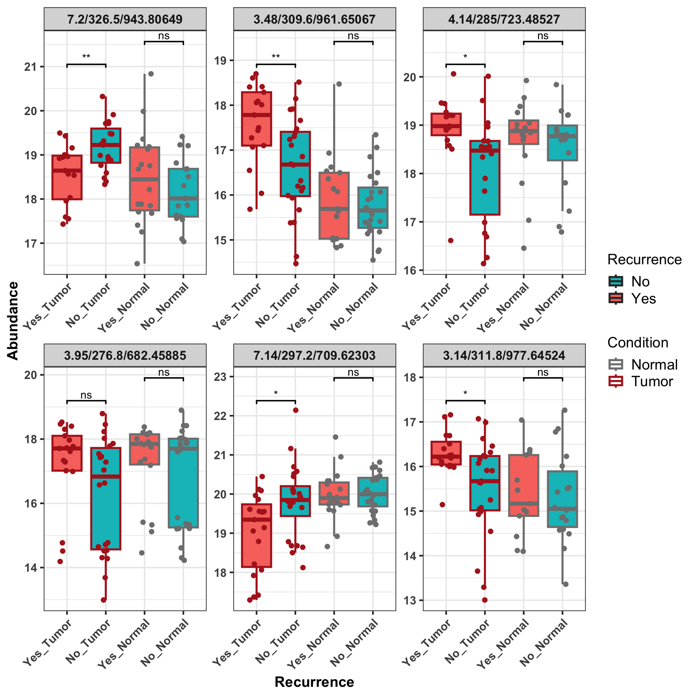

Last updated: 2024-05-15
Checks: 6 1
Knit directory: SMART-CARE_LungCancer/
This reproducible R Markdown analysis was created with workflowr (version 1.7.1). The Checks tab describes the reproducibility checks that were applied when the results were created. The Past versions tab lists the development history.
Great! Since the R Markdown file has been committed to the Git repository, you know the exact version of the code that produced these results.
Great job! The global environment was empty. Objects defined in the global environment can affect the analysis in your R Markdown file in unknown ways. For reproduciblity it’s best to always run the code in an empty environment.
The command set.seed(20230425) was run prior to running
the code in the R Markdown file. Setting a seed ensures that any results
that rely on randomness, e.g. subsampling or permutations, are
reproducible.
Great job! Recording the operating system, R version, and package versions is critical for reproducibility.
Nice! There were no cached chunks for this analysis, so you can be confident that you successfully produced the results during this run.
Using absolute paths to the files within your workflowr project makes it difficult for you and others to run your code on a different machine. Change the absolute path(s) below to the suggested relative path(s) to make your code more reproducible.
| absolute | relative |
|---|---|
| /Users/qianwu/Desktop/SMART-CARE_LungCancer | . |
Great! You are using Git for version control. Tracking code development and connecting the code version to the results is critical for reproducibility.
The results in this page were generated with repository version 9a5191e. See the Past versions tab to see a history of the changes made to the R Markdown and HTML files.
Note that you need to be careful to ensure that all relevant files for
the analysis have been committed to Git prior to generating the results
(you can use wflow_publish or
wflow_git_commit). workflowr only checks the R Markdown
file, but you know if there are other scripts or data files that it
depends on. Below is the status of the Git repository when the results
were generated:
Ignored files:
Ignored: .DS_Store
Ignored: .RData
Ignored: .Rhistory
Ignored: analysis/.DS_Store
Ignored: code/.DS_Store
Ignored: data/.DS_Store
Ignored: output/.DS_Store
Untracked files:
Untracked: analysis/CrossCohort_investigation_EXP.Rmd
Untracked: code/archive/
Untracked: code/comparison_funcs.R
Untracked: code/dataset_list.R
Untracked: code/workflowr_commands.R
Untracked: data/Discovery/
Untracked: data/MethodDev/
Untracked: data/aliquot_metadata.xlsx
Untracked: data/patient_metadata.xlsx
Untracked: data/sample_metadata.xlsx
Untracked: output/Discovery/
Untracked: output/MethodDev/
Untracked: output/SC_meeting/
Note that any generated files, e.g. HTML, png, CSS, etc., are not included in this status report because it is ok for generated content to have uncommitted changes.
These are the previous versions of the repository in which changes were
made to the R Markdown
(analysis/Discovery_02_soa_untargeted.Rmd) and HTML
(docs/Discovery_02_soa_untargeted.html) files. If you’ve
configured a remote Git repository (see ?wflow_git_remote),
click on the hyperlinks in the table below to view the files as they
were in that past version.
| File | Version | Author | Date | Message |
|---|---|---|---|---|
| Rmd | cd2e72f | LiaoQianWu | 2024-04-29 | Do SVA and SOA of untargeted lipidomics |
Description: Conduct univariate (t-test) and multivariate (PCA) analyses on individual datasets, i.e., Tissue and Plasma Untargeted Lipidomics from AG Hopf (2 datasets), to have overview of data and take initial look at data power in terms of predicting patient cancer recurrence.
Metadata variables
Patients who got Tissue samples (n = 43):
Recurrence -> Cancer recurrences, Yes:No = 19:24
Gender -> Female:Male = 18:25
Age -> Diagnosis ages ranging from 51 to 76
Smoking -> Smoker:Ex-smoker:Non-Smoker = 11:26:6
Stage -> Pathological stages, IB:IIA:IIB = 25:6:12
Adjuvant -> Adjuvant chemotherapy, True:False = 14:29
Samples:
Condition -> Tumor:Normal = 1:1
Patients who got Baseline Plasma samples (n = 63):
Recurrence -> Cancer recurrences, Yes:No = 24:39
Gender -> Female:Male = 28:35
Age -> Diagnosis ages ranging from 40 to 82
Smoking -> Smoker:Ex-smoker:Non-Smoker = 16:40:7
Stage -> Pathological stages, IB:IIA:IIB = 39:13:11
Adjuvant -> Adjuvant chemotherapy, True:False = 20:43
Load libraries
library('sva')
library('pcaMethods')
library('limma')
library('proDA')
library('pheatmap')
library('ggplotify')
library('ggrepel')
library('SummarizedExperiment')
library('tidyverse')
# Load user-defined functions
source('./code/analysis_pipeline.R')
source('./code/misc.R')
# Set plot theme
th <- theme_bw(base_size = 15) +
theme(axis.title = element_text(face = 'bold'),
axis.text = element_text(face = 'bold'),
axis.ticks = element_line(linewidth = 0.8),
legend.text = element_text(size = 15))Display associations between cancer recurrence and the other patient metadata variables to identify potential predictors (or confounders)
# Test associations between cancer recurrence and the other patient metadata variables
# Prepare patient metadata
lipTissue <- readRDS('./data/Discovery/AG_Hopf/lipTissueVsn_WBC25.rds')
patientMetadat <- tibble::as_tibble(colData(lipTissue)) %>%
dplyr::filter(!duplicated(Patient)) %>%
dplyr::select(Patient, Recurrence, Gender, Age, Smoking, Stage, Adjuvant)
patientRecur <- dplyr::select(patientMetadat, Patient, Recurrence)
patientMetadat <- dplyr::select(patientMetadat, -Recurrence)
testAsso(patientMetadat, patientRecur, cmn_col = 'Patient') %>%
dplyr::select(-Stat) Var1 Var2 pVal pValAdj Test
1 Stage Recurrence 0.0672640 0.3235498 Chi-square
2 Adjuvant Recurrence 0.1294199 0.3235498 Chi-square
3 Smoking Recurrence 0.3318727 0.5531212 Chi-square
4 Age Recurrence 0.7376735 0.7777288 T-test
5 Gender Recurrence 0.7777288 0.7777288 Chi-squareDo metadata-assisted quality control
After testing associations between PCs and tissue sample conditions, we
found that PC1 and PC2 can significantly separate Tumor and Normal
samples, which indicates decent data quality. Yet, there are some
samples misclassified.
The following 4 samples were misclassified in Krijgsveld Discovery DIA
Proteomics:
Tumor purity: I0HVOL_TU - 87% / 7EAOX7_TU - 70% / MJMTYR_TU - 40% /
XFKHGP_TU - 100%
(Mean of sample tumor cell contents is 74%, ranging from 40% to
100%.)
# Load preprocessed data
lipTissue <- readRDS('./data/Discovery/AG_Hopf/lipTissueVsn_WBC25.rds')
# Do metadata-assisted quality control
# Perform single-omics analysis
lipTissueRes <- doSOA(lipTissue, meta_var = 'Condition', pca_method = 'ppca', do_onlyPCA = T)
# Visualize top PCs
pcTab <- lipTissueRes$pcTab %>%
dplyr::mutate(Label = dplyr::case_when(Sample %in% c('I0HVOL_TU', '7EAOX7_TU',
'MJMTYR_TU', 'XFKHGP_TU',
'XFKHGP_NG', 'MJMTYR_NG',
'I0HVOL_NG', '7EAOX7_NG') ~ Sample))
ggplot(pcTab, aes(x=Condition, y=`PC1 (41.5%)`, color=Condition, fill=Condition, label=Label)) +
geom_boxplot(alpha = 0.7, outlier.shape = NA) +
geom_jitter(position = position_jitter(0.3), size = 3, show.legend = F) +
geom_text_repel(show.legend = F) +
scale_color_brewer(palette = 'Dark2') +
scale_fill_brewer(palette = 'Dark2') +
labs(x = 'Sample condition') +
thTumor purity: I0HVOL_TU - 87% / 7EAOX7_TU - 70% / 1NL5BV_TU -
53%
(Mean of sample tumor cell contents is 74%, ranging from 40% to
100%.)
pcTab <- lipTissueRes$pcTab %>%
dplyr::mutate(Label = dplyr::case_when(Sample %in% c('1NL5BV_TU', '1NL5BV_NG',
'I0HVOL_TU', 'I0HVOL_NG',
'7EAOX7_TU', '7EAOX7_NG') ~ Sample))
ggplot(pcTab, aes(x=`PC1 (41.5%)`, y=`PC2 (13.5%)`, col=Condition, label=Label)) +
geom_point(size = 2.5) +
geom_text_repel(size = 4, show.legend = F) +
scale_color_brewer(palette = 'Dark2') +
th=> Tumor and Normal tissue samples will be analyzed separately for two reasons: (1) They are characteristically different and might be offsets to each other, and (2) Normal tissues is always obtainable in case that Tumor tissues were not preserved after surgery.
Display significant associations between SVs and sample metadata variables. SVs (surrogate variables) will be included in linear model for differential analysis
# Subset certain samples
lipNormal <- lipTissue[, which(colData(lipTissue)$Condition == 'Normal')]
# Do SVA to identify latent factors that explain unknown variance
# Prepare data matrix and sample metadata table for creating model matrices
datMat <- assay(lipNormal)
# Keep only complete features
keptFeats <- apply(datMat, 1, function(featVec) {
!any(is.na(featVec))
})
datMat <- datMat[keptFeats,]
metadatTab <- colData(lipNormal) %>%
tibble::as_tibble(rownames = 'Sample')
# Create full model matrix including both adjustment variables and variables of interest
modelMat <- model.matrix(~ Recurrence, data = metadatTab)
# Create null model matrix including only adjustment variables
modelMat0 <- model.matrix(~ 1, data = metadatTab)
# Perform SVA
# Identify number of latent factors that need to be estimated
numSV = sva::num.sv(datMat, modelMat, method = 'be')
svObj = sva(datMat, modelMat, modelMat0, n.sv = numSV)Number of significant surrogate variables is: 6
Iteration (out of 5 ):1 2 3 4 5 # Do association tests between SVs and patient metadata
# Prepare surrogate variable table
svTab <- svObj$sv
rownames(svTab) <- metadatTab$Sample
colnames(svTab) <- paste0('SV', seq_len(ncol(svTab)))
svTab <- tibble::as_tibble(svTab, rownames = 'Sample')
# Prepare patient metadata table
metaTab <- dplyr::select(metadatTab, Sample, Recurrence, Gender, Age, Smoking, Stage,
Adjuvant, MissLevel)
# Do association tests
testAsso(svTab, metaTab, cmn_col = 'Sample') %>%
dplyr::filter(pVal <= 0.05) Var1 Var2 pVal pValAdj Stat Test
1 SV1 MissLevel 6.213498e-12 2.609669e-10 -0.8295928 Correlation
2 SV4 Smoking 4.788708e-03 1.005629e-01 6.1227610 ANOVA
3 SV5 Gender 1.263245e-02 1.623903e-01 -2.6084827 T-test
4 SV6 Age 2.081963e-02 1.623903e-01 0.3514886 Correlation
5 SV4 Adjuvant 2.241253e-02 1.623903e-01 -2.3730454 T-test
6 SV1 Gender 2.681695e-02 1.623903e-01 -2.2967039 T-test
7 SV1 Stage 2.706506e-02 1.623903e-01 3.9557377 ANOVA
8 SV6 MissLevel 3.379332e-02 1.774149e-01 -0.3244304 Correlation# Include surrogate variables into SE object
lipNormalTab <- summExp2df(lipNormal, row_id = 'Feature', col_id = 'Sample')
lipNormalTab <- dplyr::left_join(lipNormalTab, svTab, by = 'Sample')
lipNormal <- df2SummExp(lipNormalTab, row_id = 'Feature', col_id = 'Sample',
values = 'Value', row_anno = c('RT', 'CCS', 'MZ'),
col_anno = c(colnames(colData(lipNormal)),
paste0('SV', seq_len(ncol(svTab)-1))))
assay(lipNormal) <- as.matrix(assay(lipNormal))# Perform single-omics analysis
lipNormalRes <- doSingleOmicsAnalysis(lipNormal, soa_metaVar = 'Recurrence', num_sigFeats = 6,
pca_method = 'ppca', num_PCs = 20, num_PCfeats = 30,
use_proDA = T, pca_metaVar = c('Recurrence', 'Gender', 'Age',
'Smoking', 'Stage', 'Adjuvant',
'MissLevel'),
show_row = F,
soa_unwantVar = c(paste0('SV', seq_len(6)),
'MissLevel', 'Stage', 'Gender',
'Adjuvant', 'Smoking'))
# soa_unwantVar = c('MissLevel', 'Stage', 'Gender',
# 'Adjuvant', 'Smoking'))Display significant associations between PCs (Var1) and sample metadata variables (Var2) to overview sources of variance in data
lipNormalRes$data.var.source Var1 Var2 pVal pValAdj Stat Test
1 PC1 (28.2%) MissLevel 2.77e-09 3.88e-07 0.763 Correlation
2 PC4 (6.8%) Smoking 6.48e-03 2.73e-01 5.730 ANOVA
3 PC7 (3.7%) Smoking 9.25e-03 2.73e-01 5.280 ANOVA
4 PC1 (28.2%) Stage 1.04e-02 2.73e-01 5.130 ANOVA
5 PC12 (2.3%) Gender 1.20e-02 2.73e-01 -2.630 T-test
6 PC7 (3.7%) Stage 1.25e-02 2.73e-01 4.900 ANOVA
7 PC18 (1.2%) Recurrence 1.37e-02 2.73e-01 2.580 T-test
8 PC7 (3.7%) Adjuvant 1.57e-02 2.74e-01 2.520 T-test
9 PC6 (4.5%) Smoking 3.12e-02 4.39e-01 3.780 ANOVA
10 PC2 (16.4%) MissLevel 3.34e-02 4.39e-01 -0.325 Correlation
11 PC7 (3.7%) Gender 3.68e-02 4.39e-01 2.160 T-test
12 PC4 (6.8%) Adjuvant 3.77e-02 4.39e-01 -2.150 T-test
13 PC1 (28.2%) Gender 4.76e-02 5.13e-01 -2.040 T-testDisplay significant associations between features (Var1) and cancer recurrence (Var2). Owing to missing values, there may be situation that only few observations in sample groups, resulting in unreliable t-statistics. To this end, we used probabilistic dropout model (proDA) to account for data missingness.
lipNormalRes$sig.feat.tab Var1 Var2 pVal pValAdj Stat Test
1 7.29/325.4/967.75517 Recurrence 4.32e-05 0.100 -4.84 T-test (proDA)
2 7.29/325.6/966.75331 Recurrence 9.02e-04 0.998 -3.71 T-test (proDA)
3 7.69/330.4/961.79934 Recurrence 1.99e-03 0.998 -3.41 T-test (proDA)
4 1.82/217.1/506.2875 Recurrence 2.14e-03 0.998 3.38 T-test (proDA)
5 4.34/286/810.52723 Recurrence 4.37e-03 0.998 -3.10 T-test (proDA)
6 3.16/389.1/505.38951 Recurrence 5.16e-03 0.998 -3.03 T-test (proDA)
7 3.4/300.4/874.57951 Recurrence 5.51e-03 0.998 -3.01 T-test (proDA)
8 4.51/306.2/900.60151 Recurrence 5.58e-03 0.998 -3.00 T-test (proDA)
9 8.07/309.9/808.77421 Recurrence 5.92e-03 0.998 -2.98 T-test (proDA)
10 2.42/245.1/608.32314 Recurrence 5.93e-03 0.998 2.98 T-test (proDA)
11 5.1/278.7/738.50462 Recurrence 6.27e-03 0.998 2.96 T-test (proDA)
12 3.29/291.5/816.63993 Recurrence 8.18e-03 0.998 -2.85 T-test (proDA)
13 4.12/221.2/427.37776 Recurrence 9.18e-03 0.998 -2.80 T-test (proDA)
14 4.09/273.1/666.4289 Recurrence 1.13e-02 0.998 -2.71 T-test (proDA)
15 0.82/183.3/358.18716 Recurrence 1.16e-02 0.998 2.70 T-test (proDA)
16 4.62/286.4/764.55806 Recurrence 1.16e-02 0.998 -2.70 T-test (proDA)
17 3.22/306/904.69235 Recurrence 1.60e-02 0.998 -2.56 T-test (proDA)
18 1.54/194.2/304.29956 Recurrence 1.67e-02 0.998 -2.55 T-test (proDA)
19 2.15/211.9/360.3622 Recurrence 1.72e-02 0.998 -2.53 T-test (proDA)
20 3.21/220.7/435.3213 Recurrence 1.79e-02 0.998 2.51 T-test (proDA)
21 3.25/299.1/860.66579 Recurrence 1.80e-02 0.998 -2.51 T-test (proDA)
22 7.87/333.2/977.83071 Recurrence 1.80e-02 0.998 2.51 T-test (proDA)
23 1.79/203.8/332.33088 Recurrence 1.83e-02 0.998 -2.51 T-test (proDA)
24 4.35/287.1/780.55402 Recurrence 1.83e-02 0.998 -2.51 T-test (proDA)
25 4.86/272.7/722.51125 Recurrence 1.90e-02 0.998 -2.49 T-test (proDA)
26 4.35/285.2/842.47527 Recurrence 1.96e-02 0.998 -2.48 T-test (proDA)
27 6.79/281.7/693.61295 Recurrence 2.01e-02 0.998 2.47 T-test (proDA)
28 2.42/246.8/594.33452 Recurrence 2.21e-02 0.998 2.42 T-test (proDA)
29 6.46/277.5/654.60152 Recurrence 2.25e-02 0.998 2.41 T-test (proDA)
30 2.08/238.7/538.34995 Recurrence 2.39e-02 0.998 2.39 T-test (proDA)
31 3.41/269.7/684.56127 Recurrence 2.64e-02 0.998 -2.34 T-test (proDA)
32 5.79/257.2/537.53408 Recurrence 2.65e-02 0.998 -2.34 T-test (proDA)
33 7.16/445.4/742.51938 Recurrence 2.66e-02 0.998 2.34 T-test (proDA)
34 2.07/228.5/558.31858 Recurrence 2.69e-02 0.998 2.34 T-test (proDA)
35 7.45/290.1/682.61214 Recurrence 2.71e-02 0.998 -2.33 T-test (proDA)
36 6.18/264.8/574.5546 Recurrence 2.73e-02 0.998 -2.33 T-test (proDA)
37 3.2/251.4/592.43334 Recurrence 2.76e-02 0.998 -2.32 T-test (proDA)
38 1.68/222.4/462.34193 Recurrence 2.86e-02 0.998 -2.31 T-test (proDA)
39 7.66/334.6/1003.77162 Recurrence 2.87e-02 0.998 -2.31 T-test (proDA)
40 3.22/368.2/461.36334 Recurrence 2.88e-02 0.998 -2.31 T-test (proDA)
41 2.17/199.9/376.2693 Recurrence 2.91e-02 0.998 -2.30 T-test (proDA)
42 5.61/268.6/582.5559 Recurrence 2.99e-02 0.998 -2.29 T-test (proDA)
43 2.81/285.1/788.60908 Recurrence 3.03e-02 0.998 -2.28 T-test (proDA)
44 7.4/323.2/942.75333 Recurrence 3.12e-02 0.998 -2.27 T-test (proDA)
45 7.54/320.2/906.75459 Recurrence 3.22e-02 0.998 -2.25 T-test (proDA)
46 2.42/263/730.30948 Recurrence 3.24e-02 0.998 2.25 T-test (proDA)
47 2.19/228.7/490.33697 Recurrence 3.28e-02 0.998 -2.25 T-test (proDA)
48 3.62/240.2/508.4568 Recurrence 3.39e-02 0.998 -2.23 T-test (proDA)
49 2.91/292.6/816.63993 Recurrence 3.41e-02 0.998 -2.23 T-test (proDA)
50 5.61/276.4/718.53722 Recurrence 3.50e-02 0.998 2.22 T-test (proDA)
51 7.29/283/696.64944 Recurrence 3.54e-02 0.998 2.21 T-test (proDA)
52 3.13/216.2/432.33153 Recurrence 3.61e-02 0.998 -2.20 T-test (proDA)
53 7.21/278.9/622.64875 Recurrence 3.69e-02 0.998 -2.19 T-test (proDA)
54 7.04/281.2/669.61321 Recurrence 3.70e-02 0.998 -2.19 T-test (proDA)
55 7.88/337/1003.84738 Recurrence 3.84e-02 0.998 2.17 T-test (proDA)
56 8.28/345.9/1037.92545 Recurrence 3.84e-02 0.998 2.17 T-test (proDA)
57 3.92/230.8/475.41386 Recurrence 3.88e-02 0.998 -2.17 T-test (proDA)
58 4.81/292/792.57553 Recurrence 3.93e-02 0.998 -2.16 T-test (proDA)
59 6.34/302.1/826.66893 Recurrence 4.17e-02 0.998 -2.13 T-test (proDA)
60 4.67/298.1/858.59972 Recurrence 4.20e-02 0.998 2.13 T-test (proDA)
61 6.08/295.2/776.61561 Recurrence 4.24e-02 0.998 -2.13 T-test (proDA)
62 7.2/284.1/653.66227 Recurrence 4.41e-02 0.998 -2.11 T-test (proDA)
63 3.15/266.5/688.49881 Recurrence 4.53e-02 0.998 -2.10 T-test (proDA)
64 7.1/290.3/704.7014 Recurrence 4.54e-02 0.998 -2.09 T-test (proDA)
65 2.42/247.4/631.32984 Recurrence 4.59e-02 0.998 2.09 T-test (proDA)
66 2.73/393.8/505.38946 Recurrence 4.67e-02 0.998 -2.08 T-test (proDA)
67 5.1/273.6/716.52148 Recurrence 4.68e-02 0.998 2.08 T-test (proDA)
68 6.49/295.7/824.61601 Recurrence 4.68e-02 0.998 2.08 T-test (proDA)
69 4.09/299.1/599.50286 Recurrence 4.69e-02 0.998 2.08 T-test (proDA)
70 2.11/223.3/508.30315 Recurrence 4.73e-02 0.998 2.08 T-test (proDA)
71 5.86/304.2/801.64704 Recurrence 4.73e-02 0.998 2.07 T-test (proDA)
72 7.43/327.1/968.76912 Recurrence 4.77e-02 0.998 -2.07 T-test (proDA)
73 4.14/286.4/772.54859 Recurrence 4.80e-02 0.998 -2.07 T-test (proDA)
74 2.4/227.7/440.37293 Recurrence 4.87e-02 0.998 2.06 T-test (proDA)
75 3.19/379/483.37643 Recurrence 4.95e-02 0.998 -2.05 T-test (proDA)
76 6.17/310/802.63119 Recurrence 4.97e-02 0.998 -2.05 T-test (proDA)Visualize molecular signatures of significant features in data. Note that features in rows are ordered by t-statistics.
lipNormalRes$sig.feat.heatVisualize top significant features identified in Tumor samples (ns: p > 0.05, \(*\): p <= 0.05, \(**\): p <= 0.01)
# Prepare data matrix and metadata including both Tumor and Normal samples
datMat <- lipTissueRes$data
smpAnnoTab <- lipTissueRes$smpMetadata
# Prepare significant feature table
featSigAssoTab <- lipNormalRes$sig.feat.tab
num_sigFeats <- 6
gpLevel = c('Yes_Normal', 'No_Normal', 'Yes_Tumor', 'No_Tumor')
condiCol = c('firebrick', 'grey50') #c(Normal, Tumor)
# Extract top significant features and prepare needed information
topSigFeats <- featSigAssoTab[1:num_sigFeats,] %>%
dplyr::pull(Var1)
topSigFeatDat <- tibble::as_tibble(datMat[topSigFeats,], rownames = 'Var1') %>%
tidyr::pivot_longer(cols = -'Var1', names_to = 'Sample', values_to = 'Abundance') %>%
dplyr::left_join(smpAnnoTab, by = 'Sample') %>%
dplyr::mutate(Var1 = factor(Var1, levels = topSigFeats),
Recur_Condi = paste0(Recurrence, '_', Condition),
Recur_Condi = factor(Recur_Condi, levels = gpLevel))
ggplot(topSigFeatDat, aes(x=Recur_Condi, y=Abundance, col=Condition, fill=Recurrence)) +
geom_boxplot(alpha = 1, outlier.shape = NA, linewidth = 1) +
geom_jitter(position = position_jitter(0.2), size = 2, show.legend = F) +
ggpubr::stat_compare_means(method = 't.test', paired = F, method.args = list(var.equal = T),
comparisons = list(c('Yes_Normal', 'No_Normal'), c('Yes_Tumor', 'No_Tumor')),
label = 'p.signif', tip.length = 0.015, bracket.size = 0.7, size = 4) +
labs(x = 'Recurrence') +
scale_color_manual(values = condiCol) +
scale_fill_manual(values=c('#00BFC4', '#F8766D')) +
facet_wrap(vars(Var1), scales = 'free') +
th + theme(strip.text = element_text(size = 13, face = 'bold'),
axis.text.x = element_text(angle = 45, hjust = 1, vjust = 1))Assess data power by p-value histogram
lipNormalRes$pval.histDisplay significant associations between PCs (Var1) and cancer recurrence (Var2)
lipNormalRes$sig.pc.tab Var1 Var2 pVal pValAdj Stat Test
1 PC18 (1.2%) Recurrence 0.0137 0.273 2.58 T-testVisualize significant PCs and display their top features with greatest absolute loadings
lipNormalRes$sig.pc.dist$PC18lipNormalRes$pc.top.feat.tab$PC18 Feature Loading
1 1.09/197.8/471.16257 -0.2240
2 2.64/226.3/460.41459 0.1530
3 4.3/248.3/543.43608 -0.1120
4 3.78/185.3/319.26083 -0.1120
5 3.74/235.9/488.39392 -0.1100
6 8.33/308.2/774.71092 0.1080
7 4.3/243.3/516.42537 -0.1050
8 3.19/210.5/392.37297 0.1040
9 8.4/336.8/971.91187 0.1040
10 2.82/230.7/646.25581 -0.0993
11 3.74/241.1/515.40485 -0.0983
12 2.63/286/353.26603 0.0979
13 8.1/332.9/963.85305 0.0957
14 2.63/280.2/683.54247 0.0925
15 2.11/248.8/572.45188 -0.0902
16 2.19/228.7/490.33697 -0.0883
17 1.12/194.3/455.18853 -0.0833
18 2.08/238.7/538.34995 0.0822
19 8.08/303.3/744.66362 0.0817
20 2.83/301.5/906.56929 -0.0806
21 1.23/275.7/882.43273 -0.0794
22 1.72/214.3/444.33206 -0.0794
23 8.17/340.8/1009.89558 -0.0777
24 1.09/184.1/420.10916 0.0772
25 3.16/292.5/739.60487 0.0752
26 3.16/298/381.29722 0.0738
27 1.09/183.6/358.18729 0.0709
28 3.61/339.3/908.73091 -0.0703
29 8.28/337.2/973.89291 -0.0695
30 2.09/204.2/446.26941 -0.0693Note that tumor purity is also included in linear model for more reliable t-test results because they are significantly associated with top PCs.
# Subset certain samples
lipTumor <- lipTissue[, which(colData(lipTissue)$Condition == 'Tumor')]
# Perform single-omics analysis
lipTumorRes <- doSingleOmicsAnalysis(lipTumor, soa_metaVar = 'Recurrence', num_sigFeats = 6,
pca_method = 'ppca', num_PCs = 20, num_PCfeats = 30,
use_proDA = T, pca_metaVar = c('Recurrence', 'Gender', 'Age',
'Smoking', 'Stage', 'Adjuvant',
'TumorPurity'),
soa_unwantVar = 'TumorPurity')Display significant associations between PCs (Var1) and sample metadata variables (Var2) to overview sources of variance in data
lipTumorRes$data.var.source Var1 Var2 pVal pValAdj Stat Test
1 PC5 (6.8%) Adjuvant 0.00110 0.110 3.510 T-test
2 PC10 (3%) Smoking 0.00157 0.110 7.620 ANOVA
3 PC1 (23.4%) TumorPurity 0.00298 0.139 0.442 Correlation
4 PC7 (4.8%) TumorPurity 0.01060 0.310 0.386 Correlation
5 PC6 (5.1%) TumorPurity 0.01110 0.310 -0.384 Correlation
6 PC19 (1.5%) Age 0.01700 0.396 0.362 Correlation
7 PC17 (1.7%) Age 0.02250 0.451 0.347 Correlation
8 PC3 (10.5%) Gender 0.03950 0.661 -2.130 T-test
9 PC13 (2.2%) Gender 0.04250 0.661 2.090 T-testDisplay significant associations between features (Var1) and cancer recurrence (Var2).
lipTumorRes$sig.feat.tab Var1 Var2 pVal pValAdj Stat Test
1 7.2/326.5/943.80649 Recurrence 0.00131 1 -3.46 T-test (proDA)
2 3.48/309.6/961.65067 Recurrence 0.00644 1 2.88 T-test (proDA)
3 4.14/285/723.48527 Recurrence 0.00760 1 2.81 T-test (proDA)
4 3.95/276.8/682.45885 Recurrence 0.00856 1 2.77 T-test (proDA)
5 7.14/297.2/709.62303 Recurrence 0.01340 1 -2.59 T-test (proDA)
6 3.14/311.8/977.64524 Recurrence 0.01540 1 2.53 T-test (proDA)
7 1.05/187.5/446.88778 Recurrence 0.01820 1 -2.46 T-test (proDA)
8 6.62/292.1/740.63911 Recurrence 0.01860 1 -2.45 T-test (proDA)
9 7.4/303.4/817.70533 Recurrence 0.01860 1 -2.45 T-test (proDA)
10 4.12/236.7/471.41522 Recurrence 0.01900 1 -2.44 T-test (proDA)
11 3.94/280.8/709.46948 Recurrence 0.01960 1 2.43 T-test (proDA)
12 6.45/281.4/735.51418 Recurrence 0.02160 1 -2.39 T-test (proDA)
13 4.12/221.2/427.37776 Recurrence 0.02350 1 -2.35 T-test (proDA)
14 4.13/280.1/696.47537 Recurrence 0.02390 1 2.35 T-test (proDA)
15 6.65/271.4/860.25144 Recurrence 0.02610 1 -2.31 T-test (proDA)
16 4.18/274.6/679.44766 Recurrence 0.02620 1 2.31 T-test (proDA)
17 7.63/303.7/811.67724 Recurrence 0.02750 1 -2.29 T-test (proDA)
18 4.09/273.1/666.4289 Recurrence 0.02900 1 2.27 T-test (proDA)
19 3.66/232/487.37364 Recurrence 0.03240 1 2.22 T-test (proDA)
20 3.88/250.2/610.46654 Recurrence 0.03240 1 -2.22 T-test (proDA)
21 4.14/301.1/839.5096 Recurrence 0.03360 1 2.20 T-test (proDA)
22 3.56/249/552.48294 Recurrence 0.03400 1 -2.20 T-test (proDA)
23 6.65/260.9/834.23895 Recurrence 0.03650 1 -2.16 T-test (proDA)
24 3.62/240.2/508.4568 Recurrence 0.03730 1 -2.15 T-test (proDA)
25 4.53/223.2/445.36707 Recurrence 0.03890 1 2.13 T-test (proDA)
26 3.46/222.1/435.34642 Recurrence 0.03900 1 -2.13 T-test (proDA)
27 7.74/319.8/900.78614 Recurrence 0.04370 1 -2.08 T-test (proDA)
28 8.21/282.6/647.57319 Recurrence 0.04370 1 -2.08 T-test (proDA)
29 2.2/191.9/319.28404 Recurrence 0.04790 1 -2.04 T-test (proDA)
30 7.72/325.8/888.7994 Recurrence 0.04840 1 -2.04 T-test (proDA)
31 3.92/268.4/647.42167 Recurrence 0.04920 1 2.03 T-test (proDA)
32 6.5/244.2/698.25435 Recurrence 0.04980 1 -2.02 T-test (proDA)
33 7.78/310.1/839.70911 Recurrence 0.04990 1 -2.02 T-test (proDA)
34 6.46/270.5/686.50527 Recurrence 0.05000 1 -2.02 T-test (proDA)Visualize molecular signatures of significant features in data. Note that features in rows are ordered by t-statistics.
lipTumorRes$sig.feat.heatVisualize top significant features identified in Tumor samples (ns: p > 0.05, \(*\): p <= 0.05, \(**\): p <= 0.01)
# Prepare data matrix and metadata including both Tumor and Normal samples
datMat <- lipTissueRes$data
smpAnnoTab <- lipTissueRes$smpMetadata
# Prepare significant feature table
featSigAssoTab <- lipTumorRes$sig.feat.tab
num_sigFeats <- 6
gpLevel = c('Yes_Tumor', 'No_Tumor', 'Yes_Normal', 'No_Normal')
condiCol = c('grey50', 'firebrick') #c(Normal, Tumor)
# Extract top significant features and prepare needed information
topSigFeats <- featSigAssoTab[1:num_sigFeats,] %>%
dplyr::pull(Var1)
topSigFeatDat <- tibble::as_tibble(datMat[topSigFeats,], rownames = 'Var1') %>%
tidyr::pivot_longer(cols = -'Var1', names_to = 'Sample', values_to = 'Abundance') %>%
dplyr::left_join(smpAnnoTab, by = 'Sample') %>%
dplyr::mutate(Var1 = factor(Var1, levels = topSigFeats),
Recur_Condi = paste0(Recurrence, '_', Condition),
Recur_Condi = factor(Recur_Condi, levels = gpLevel))
ggplot(topSigFeatDat, aes(x=Recur_Condi, y=Abundance, col=Condition, fill=Recurrence)) +
geom_boxplot(alpha = 1, outlier.shape = NA, linewidth = 1) +
geom_jitter(position = position_jitter(0.2), size = 2, show.legend = F) +
ggpubr::stat_compare_means(method = 't.test', paired = F, method.args = list(var.equal = T),
comparisons = list(c('Yes_Tumor', 'No_Tumor'), c('Yes_Normal', 'No_Normal')),
label = 'p.signif', tip.length = 0.015, bracket.size = 0.7, size = 4) +
labs(x = 'Recurrence') +
scale_color_manual(values = condiCol) +
scale_fill_manual(values=c('#00BFC4', '#F8766D')) +
facet_wrap(vars(Var1), scales = 'free') +
th + theme(strip.text = element_text(size = 13, face = 'bold'),
axis.text.x = element_text(angle = 45, hjust = 1, vjust = 1))
Assess data power by p-value histogram
lipTumorRes$pval.histThere exists no PC significantly associated with cancer recurrence
lipTumorRes$sig.pc.tab[1] Var1 Var2 pVal pValAdj Stat Test
<0 rows> (or 0-length row.names)We first focused on analysis of Baseline plasma samples because (1) what we are most interested in is predicting recurrence, and (2) Baseline samples are less complex compared to Follow-up samples.
Note that plates where samples were located are also included in linear model for more reliable t-test results because they are significantly associated with top PCs.
# Load preprocessed data
lipBase <- readRDS('./data/Discovery/AG_Hopf/lipBaseVsn_B1WBC25.rds')
# Perform single-omics analysis
lipBaseRes <- doSingleOmicsAnalysis(lipBase, soa_metaVar = 'Recurrence', num_sigFeats = 6,
pca_method = 'ppca', num_PCs = 20, num_PCfeats = 30,
use_proDA = T, pca_metaVar = c('Recurrence', 'Gender', 'Age',
'Smoking', 'Stage', 'Adjuvant',
'Plate'),
soa_unwantVar = 'Plate')Display significant associations between PCs (Var1) and sample metadata variables (Var2) to overview sources of variance in data
lipBaseRes$data.var.source Var1 Var2 pVal pValAdj Stat Test
1 PC1 (20.4%) Plate 1.88e-06 0.000263 12.60 ANOVA
2 PC3 (8.2%) Plate 3.94e-04 0.027600 7.05 ANOVA
3 PC6 (6.3%) Plate 1.42e-03 0.066100 5.87 ANOVA
4 PC9 (4%) Gender 2.64e-03 0.092400 -3.14 T-test
5 PC3 (8.2%) Gender 6.04e-03 0.169000 -2.85 T-test
6 PC5 (7%) Recurrence 7.27e-03 0.170000 2.78 T-test
7 PC19 (1.4%) Age 1.35e-02 0.248000 0.31 Correlation
8 PC11 (3%) Adjuvant 1.42e-02 0.248000 2.53 T-test
9 PC18 (1.5%) Adjuvant 2.08e-02 0.324000 2.37 T-test
10 PC3 (8.2%) Stage 2.80e-02 0.364000 3.80 ANOVA
11 PC10 (3.6%) Plate 3.39e-02 0.364000 3.09 ANOVA
12 PC14 (2%) Gender 3.99e-02 0.364000 2.10 T-test
13 PC9 (4%) Plate 4.17e-02 0.364000 2.91 ANOVA
14 PC8 (4.3%) Smoking 4.19e-02 0.364000 3.35 ANOVA
15 PC18 (1.5%) Plate 4.33e-02 0.364000 2.88 ANOVA
16 PC7 (4.9%) Stage 4.57e-02 0.364000 3.25 ANOVA
17 PC4 (7.2%) Gender 4.85e-02 0.364000 -2.01 T-test
18 PC13 (2.3%) Gender 4.86e-02 0.364000 2.01 T-test
19 PC19 (1.4%) Plate 4.94e-02 0.364000 2.77 ANOVADisplay significant associations between features (Var1) and cancer recurrence (Var2). Owing to missing values, there may be situation that only few observations in sample groups, resulting in unreliable t-statistics. To this end, we used probabilistic dropout model (proDA) to account for data missingness.
lipBaseRes$sig.feat.tab Var1 Var2 pVal pValAdj Stat Test
1 4.1/299.1/907.53053 Recurrence 0.00498 0.993 2.92 T-test (proDA)
2 4.58/295.6/859.5308 Recurrence 0.00536 0.993 2.89 T-test (proDA)
3 5.47/289.9/764.59741 Recurrence 0.00666 0.993 2.81 T-test (proDA)
4 2.6/267.7/611.53587 Recurrence 0.00685 0.993 -2.80 T-test (proDA)
5 2.61/273.7/352.24594 Recurrence 0.00762 0.993 -2.76 T-test (proDA)
6 4.29/289.7/837.49733 Recurrence 0.00775 0.993 2.76 T-test (proDA)
7 5.87/301.8/838.63216 Recurrence 0.01010 0.993 2.66 T-test (proDA)
8 5.58/298.1/818.60651 Recurrence 0.01040 0.993 -2.65 T-test (proDA)
9 1.6/241.6/606.25946 Recurrence 0.01370 0.993 2.54 T-test (proDA)
10 1.68/244.7/632.27526 Recurrence 0.01410 0.993 2.53 T-test (proDA)
11 4.8/284.1/754.53606 Recurrence 0.01480 0.993 2.51 T-test (proDA)
12 4.69/457.8/777.05397 Recurrence 0.01510 0.993 -2.50 T-test (proDA)
13 4.77/295.1/777.59251 Recurrence 0.01620 0.993 2.48 T-test (proDA)
14 4.8/282.5/732.55407 Recurrence 0.01860 0.993 2.42 T-test (proDA)
15 4.78/295.3/776.5894 Recurrence 0.01930 0.993 2.41 T-test (proDA)
16 5.88/303.9/860.61399 Recurrence 0.02080 0.993 2.38 T-test (proDA)
17 4.18/276.7/704.52268 Recurrence 0.02090 0.993 2.37 T-test (proDA)
18 2.62/277.7/353.26622 Recurrence 0.02110 0.993 -2.37 T-test (proDA)
19 4.1/302/902.5754 Recurrence 0.02420 0.993 2.31 T-test (proDA)
20 4.04/299.2/876.55975 Recurrence 0.02450 0.993 2.31 T-test (proDA)
21 5.86/305.4/918.54232 Recurrence 0.02480 0.993 2.30 T-test (proDA)
22 2.8/205/369.35172 Recurrence 0.02560 0.993 2.29 T-test (proDA)
23 5.32/291.2/786.59331 Recurrence 0.02650 0.993 2.28 T-test (proDA)
24 6/298.9/826.57264 Recurrence 0.02740 0.993 2.26 T-test (proDA)
25 2.6/181.5/344.20085 Recurrence 0.02760 0.993 -2.26 T-test (proDA)
26 4.12/287.7/748.54904 Recurrence 0.02870 0.993 2.24 T-test (proDA)
27 4.02/292/826.54228 Recurrence 0.02920 0.993 2.24 T-test (proDA)
28 2.25/177.9/302.24539 Recurrence 0.03030 0.993 -2.22 T-test (proDA)
29 5.88/301.9/841.64239 Recurrence 0.03130 0.993 2.21 T-test (proDA)
30 6/306.6/832.65402 Recurrence 0.03160 0.993 2.20 T-test (proDA)
31 1.59/224.3/468.30859 Recurrence 0.03210 0.993 2.20 T-test (proDA)
32 1.34/194.8/342.26402 Recurrence 0.03280 0.993 2.19 T-test (proDA)
33 2.58/258.9/537.53569 Recurrence 0.03310 0.993 -2.18 T-test (proDA)
34 5.92/286.5/778.57483 Recurrence 0.03450 0.993 2.17 T-test (proDA)
35 4.25/286.6/780.55421 Recurrence 0.03600 0.993 2.15 T-test (proDA)
36 4.19/283.3/754.53827 Recurrence 0.03630 0.993 2.14 T-test (proDA)
37 7.61/327/941.79207 Recurrence 0.03640 0.993 -2.14 T-test (proDA)
38 5.71/300.8/836.61624 Recurrence 0.03650 0.993 2.14 T-test (proDA)
39 7.32/318.7/910.74983 Recurrence 0.03690 0.993 -2.14 T-test (proDA)
40 1.6/229/490.29065 Recurrence 0.03830 0.993 2.12 T-test (proDA)
41 2.44/248.9/524.37126 Recurrence 0.03840 0.993 2.12 T-test (proDA)
42 6.06/316.4/923.60499 Recurrence 0.03900 0.993 -2.11 T-test (proDA)
43 4.03/281.2/754.5382 Recurrence 0.04210 0.993 2.08 T-test (proDA)
44 4.57/296.3/881.51277 Recurrence 0.04500 0.993 2.05 T-test (proDA)
45 4.8/282.5/735.56312 Recurrence 0.04590 0.993 2.04 T-test (proDA)
46 7.61/323.6/914.78112 Recurrence 0.04840 0.993 -2.02 T-test (proDA)Visualize molecular signatures of significant features in data. Note that features in rows are ordered by t-statistics.
lipBaseRes$sig.feat.heatVisualize top significant features
lipBaseRes$top.sig.feat.distAssess data power by p-value histogram
lipBaseRes$pval.histDisplay significant associations between PCs (Var1) and cancer recurrence (Var2)
lipBaseRes$sig.pc.tab Var1 Var2 pVal pValAdj Stat Test
1 PC5 (7%) Recurrence 0.00727 0.145 2.78 T-testVisualize significant PCs and display their top features with greatest absolute loadings
lipBaseRes$sig.pc.dist$PC5lipBaseRes$pc.top.feat.tab$PC5 Feature Loading
1 2.6/269.1/304.26104 -0.2110
2 2.6/262.2/563.55156 -0.1870
3 2.25/177.9/302.24539 -0.1770
4 2.58/258.9/537.53569 -0.1500
5 1.59/192.7/320.25613 0.1460
6 2.24/256/559.51983 -0.1140
7 2.52/257.3/511.51993 -0.1110
8 3.06/186.4/306.27676 -0.1110
9 1.42/200/344.27961 0.1020
10 2.12/248.8/507.48869 -0.1010
11 1.51/203.1/370.29534 0.0984
12 4.8/282.5/735.56312 0.0908
13 6.67/274.4/680.58256 0.0885
14 4.8/282.5/732.55407 0.0871
15 1.34/194.8/342.26402 0.0827
16 5.71/306.4/856.6541 0.0799
17 2.7/197.8/379.28193 0.0768
18 3.05/243.1/570.40025 0.0764
19 7.54/295.8/788.62074 0.0758
20 4.8/284.1/754.53606 0.0752
21 2.68/262.9/551.55113 -0.0743
22 5.91/310.7/882.6694 0.0733
23 1.01/194.2/558.90125 0.0728
24 1.26/190.1/316.24831 0.0725
25 3.15/214.5/401.34147 0.0723
26 4.12/287.7/748.54904 0.0715
27 1.74/210.3/398.32665 0.0713
28 3.19/270.8/649.53466 0.0705
29 5.87/301.8/838.63216 0.0704
30 7.46/321.2/923.71029 -0.0700
sessionInfo()R version 4.3.2 (2023-10-31)
Platform: aarch64-apple-darwin20 (64-bit)
Running under: macOS Ventura 13.4
Matrix products: default
BLAS: /Library/Frameworks/R.framework/Versions/4.3-arm64/Resources/lib/libRblas.0.dylib
LAPACK: /Library/Frameworks/R.framework/Versions/4.3-arm64/Resources/lib/libRlapack.dylib; LAPACK version 3.11.0
locale:
[1] en_US.UTF-8/en_US.UTF-8/en_US.UTF-8/C/en_US.UTF-8/en_US.UTF-8
time zone: Europe/Berlin
tzcode source: internal
attached base packages:
[1] stats4 stats graphics grDevices utils datasets methods
[8] base
other attached packages:
[1] visdat_0.6.0 vsn_3.70.0
[3] lubridate_1.9.3 forcats_1.0.0
[5] stringr_1.5.1 dplyr_1.1.4
[7] purrr_1.0.2 readr_2.1.5
[9] tidyr_1.3.1 tibble_3.2.1
[11] tidyverse_2.0.0 SummarizedExperiment_1.32.0
[13] GenomicRanges_1.54.1 GenomeInfoDb_1.38.8
[15] IRanges_2.36.0 S4Vectors_0.40.2
[17] MatrixGenerics_1.14.0 matrixStats_1.3.0
[19] ggrepel_0.9.5 ggplot2_3.5.1
[21] ggplotify_0.1.2 pheatmap_1.0.12
[23] proDA_1.16.0 limma_3.58.1
[25] pcaMethods_1.94.0 Biobase_2.62.0
[27] BiocGenerics_0.48.1 sva_3.50.0
[29] BiocParallel_1.36.0 genefilter_1.84.0
[31] mgcv_1.9-1 nlme_3.1-164
[33] workflowr_1.7.1
loaded via a namespace (and not attached):
[1] RColorBrewer_1.1-3 rstudioapi_0.16.0 jsonlite_1.8.8
[4] magrittr_2.0.3 farver_2.1.1 rmarkdown_2.26
[7] fs_1.6.3 zlibbioc_1.48.2 vctrs_0.6.5
[10] memoise_2.0.1 RCurl_1.98-1.14 rstatix_0.7.2
[13] htmltools_0.5.8.1 S4Arrays_1.2.1 broom_1.0.5
[16] SparseArray_1.2.4 gridGraphics_0.5-1 sass_0.4.9
[19] bslib_0.7.0 extraDistr_1.10.0 cachem_1.0.8
[22] whisker_0.4.1 lifecycle_1.0.4 pkgconfig_2.0.3
[25] Matrix_1.6-5 R6_2.5.1 fastmap_1.1.1
[28] GenomeInfoDbData_1.2.11 digest_0.6.35 colorspace_2.1-0
[31] AnnotationDbi_1.64.1 ps_1.7.6 rprojroot_2.0.4
[34] RSQLite_2.3.6 ggpubr_0.6.0 labeling_0.4.3
[37] fansi_1.0.6 timechange_0.3.0 httr_1.4.7
[40] abind_1.4-5 compiler_4.3.2 bit64_4.0.5
[43] withr_3.0.0 backports_1.4.1 carData_3.0-5
[46] DBI_1.2.2 highr_0.10 ggsignif_0.6.4
[49] DelayedArray_0.28.0 tools_4.3.2 httpuv_1.6.15
[52] glue_1.7.0 callr_3.7.6 promises_1.3.0
[55] grid_4.3.2 getPass_0.2-4 generics_0.1.3
[58] gtable_0.3.5 tzdb_0.4.0 preprocessCore_1.64.0
[61] hms_1.1.3 car_3.1-2 utf8_1.2.4
[64] XVector_0.42.0 pillar_1.9.0 yulab.utils_0.1.4
[67] later_1.3.2 splines_4.3.2 lattice_0.22-6
[70] survival_3.5-8 bit_4.0.5 annotate_1.80.0
[73] tidyselect_1.2.1 locfit_1.5-9.9 Biostrings_2.70.3
[76] knitr_1.46 git2r_0.33.0 edgeR_4.0.16
[79] xfun_0.43 statmod_1.5.0 stringi_1.8.3
[82] yaml_2.3.8 evaluate_0.23 codetools_0.2-20
[85] BiocManager_1.30.22 cli_3.6.2 affyio_1.72.0
[88] xtable_1.8-4 munsell_0.5.1 processx_3.8.4
[91] jquerylib_0.1.4 Rcpp_1.0.12 png_0.1-8
[94] XML_3.99-0.16.1 parallel_4.3.2 blob_1.2.4
[97] bitops_1.0-7 scales_1.3.0 affy_1.80.0
[100] crayon_1.5.2 rlang_1.1.3 KEGGREST_1.42.0